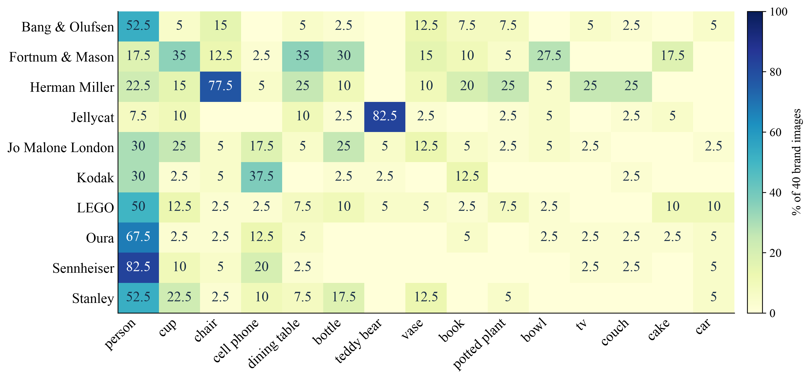
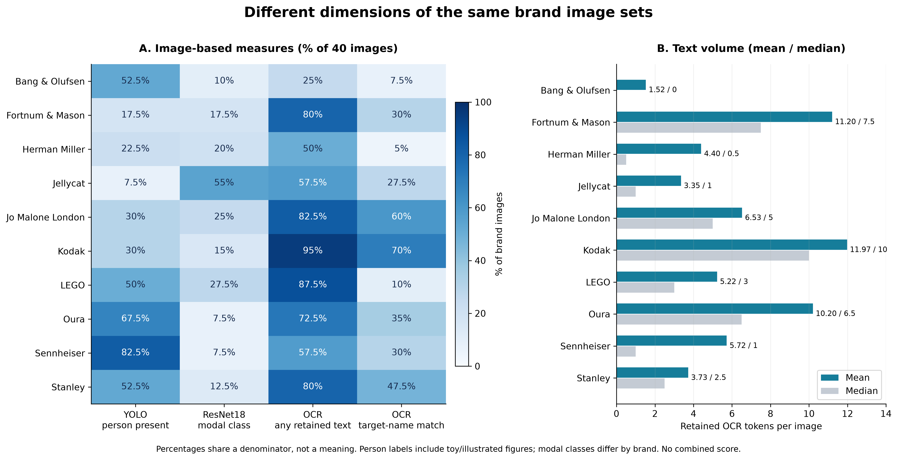
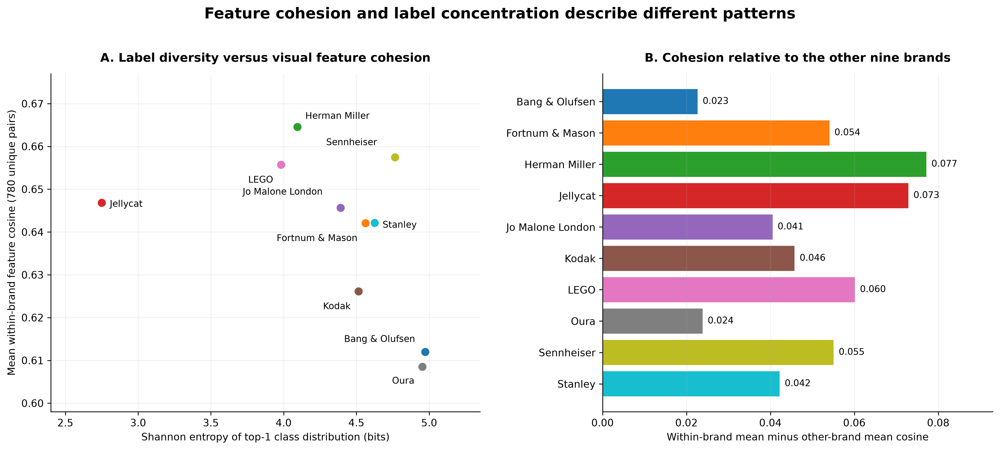
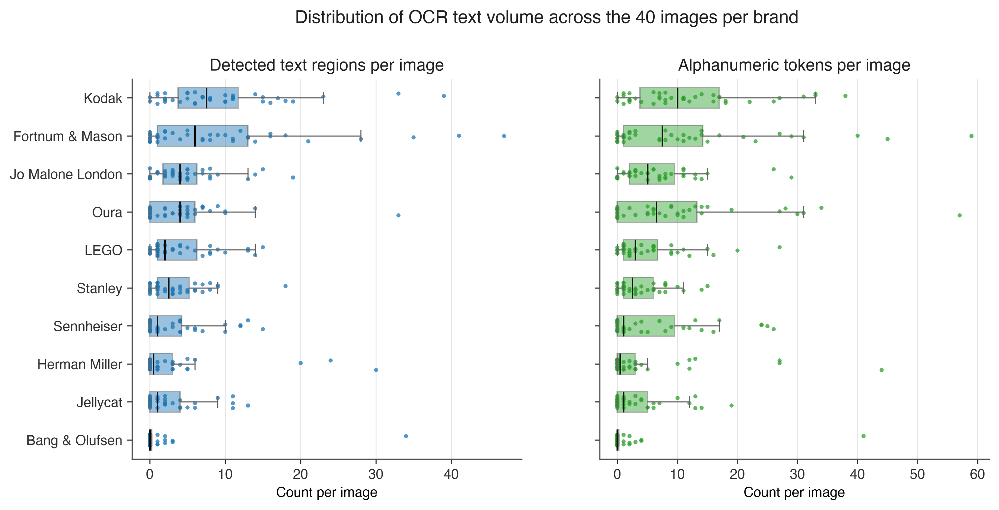
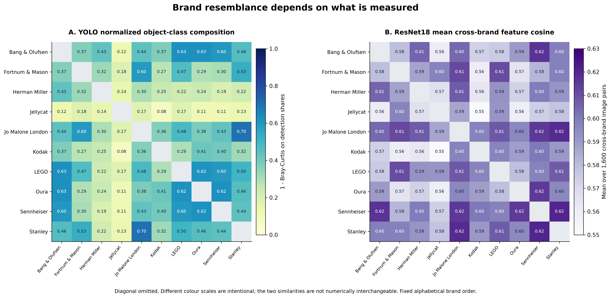
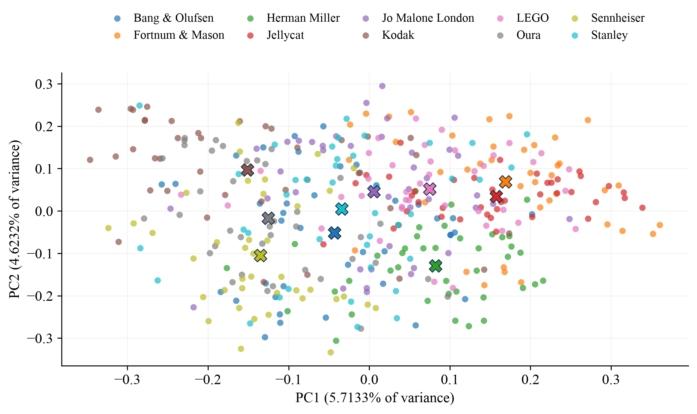

Lane Crawford Brand Discovery
Topic 2 · Instagram image analysis · 12 November 2026
1. Objective
Assignment 4, Topic 2 investigates the Instagram imagery of ten Lane Crawford brands using three pretrained models. YOLO11n provides object and scene-context detections, ResNet18 provides ImageNet categories and global features, and EasyOCR provides readable text and target-name matches.
The analysis compares product-category recurrence, feature cohesion and textual naming across the same curated images. The findings describe the collected imagery and its model-derived representations.
Dataset and scope. 400 images, 40 per brand, from 350 distinct Instagram posts. All three models use the frozen image set with pretrained weights and inference-only processing.
2. Brand Selection & Image Collection
Selection began with 407 Home & Lifestyle entries from Lane Crawford's Hong Kong brand directory. Recorded product availability, category coverage and English Wikipedia pageviews for November 2025–October 2026 informed the initial selection. Jellycat and Stanley were required, with a maximum of two brands per assigned category.
Access barriers and product availability led to replacements during collection. The final ten span toys, audio, drinkware, cameras/imaging, fragrance, food, furniture and personal electronics. The selection is purposive, and Wikipedia pageviews serve as an attention proxy.
| Brand | Images | Distinct posts |
|---|---|---|
| Bang & Olufsen | 40 | 36 |
| Fortnum & Mason | 40 | 30 |
| Herman Miller | 40 | 35 |
| Jellycat | 40 | 36 |
| Jo Malone London | 40 | 40 |
| Kodak | 40 | 39 |
| LEGO | 40 | 32 |
| Oura | 40 | 34 |
| Sennheiser | 40 | 38 |
| Stanley | 40 | 30 |
AI-assisted searches identified candidate official, retailer, media and creator accounts. Human review selected relevant images and reduced repetition. Scripts supported organization, hashing and duplicate checks. The final source records contain 224 automated fetches, 175 manual collections and one user-supplied attachment.
Fifty images are additional frames from already represented posts. Missing source fields, uneven campaign exposure and dates spanning 2016–2026 constrain the sample's representativeness.
3. Pretrained Models & Measurements
| Model | Settings | Measurements |
|---|---|---|
| YOLO11n | COCO, 80 classes; 640 × 640 letterbox; confidence ≥0.25; NMS IoU 0.45 | Boxes, class presence, pooled object composition |
| ResNet18 | ImageNet-1K V1; RGB resize 256, center crop 224; standard normalization | Top-1/5 categories, 512-dimensional pooled features |
| EasyOCR | CRAFT + english_g2; English; retained recognition confidence ≥0.30 | Text regions, tokens, normalized exact target aliases |
Recorded model inference used Apple Silicon MPS and FP32. Images with zero detections or zero retained text remain in all image-level denominators.
ResNet class diversity uses Shannon entropy over the 40 top-one labels. Feature cohesion uses mean cosine similarity over 780 unique unordered pairs per brand. Each distinct cross-brand pair contributes 1,600 image pairs.
YOLO composition divides each class's detection count by the brand's total detections. Similarity is 1 − 0.5 × Σ |p(a) − p(b)|. Images with many detected objects contribute more events to this pooled composition. The cohesion gap subtracts similarity to the other brands from within-brand similarity.
4. Overall Model Outputs
| Model | Output summary |
|---|---|
| YOLO11n | 1,178 detections; 358 nonzero images; 42 zero-detection images; 64 observed classes |
| ResNet18 | 203 distinct top-one classes; mean top-one probability 0.393 |
| EasyOCR | 1,817 of 2,970 regions retained; 2,554 tokens; 275 text-positive images |
| Target-name matching | 212 exact normalized matches across 129 images |


Jellycat's teddy-bear and Herman Miller's chair signals concentrate in their respective samples. The diagnostic review also found toy figures receiving person labels and specialized products receiving generic categories. These observations guide the interpretation of model outputs.
5. Unified Brand Profiles
| Brand | Leading YOLO class | ResNet mode | Entropy (bits) | Within cosine | OCR text | OCR name |
|---|---|---|---|---|---|---|
| Bang & Olufsen | person (21/40) | lens cap (4/40) | 4.97 | 0.612 | 10/40 | 3/40 |
| Fortnum & Mason | cup (14/40) | hamper (7/40) | 4.56 | 0.642 | 32/40 | 12/40 |
| Herman Miller | chair (31/40) | desk (8/40) | 4.09 | 0.665 | 20/40 | 2/40 |
| Jellycat | teddy bear (33/40) | teddy (22/40) | 2.75 | 0.647 | 23/40 | 11/40 |
| Jo Malone London | bottle (10/40) | perfume (10/40) | 4.39 | 0.646 | 33/40 | 24/40 |
| Kodak | cell phone (15/40) | Polaroid camera (6/40) | 4.52 | 0.626 | 38/40 | 28/40 |
| LEGO | person (20/40) | toyshop (11/40) | 3.98 | 0.656 | 35/40 | 4/40 |
| Oura | person (27/40) | web site (3/40) | 4.95 | 0.609 | 29/40 | 14/40 |
| Sennheiser | person (33/40) | stethoscope (3/40) | 4.77 | 0.657 | 23/40 | 12/40 |
| Stanley | person (21/40) | bucket (5/40) | 4.63 | 0.642 | 32/40 | 19/40 |
The leading YOLO class is selected by total detections, while the displayed count gives images containing that class. Sennheiser has three tied ResNet modes, each occurring in three images. Full-precision profiles include the ties, token counts and cohesion gaps.




Jellycat has teddy-bear detections in 33/40 images, teddy top-one predictions in 22/40 and target-name matches in 11/40. Its class entropy is lowest at 2.75 bits. Herman Miller has chairs in 31/40, names in 2/40 and the highest within-brand cosine, 0.665.
Sennheiser combines 30 top-one labels and 4.77-bit entropy with relatively high cohesion, 0.657. Bang & Olufsen and Oura have high label entropy and lower cohesion, while their text-positive counts differ substantially at 10/40 and 29/40.
6. Complementary Evidence & Diagnostic Cases
| Brand | YOLO / ResNet cue | YOLO | ResNet | Both | Either | Either + name |
|---|---|---|---|---|---|---|
| Jellycat | teddy bear / teddy | 33 | 22 | 19 | 36 | 9 |
| Herman Miller | chair / desk | 31 | 8 | 8 | 31 | 1 |
| Jo Malone London | bottle / perfume | 10 | 10 | 1 | 19 | 14 |
| Kodak | cell phone / Polaroid camera | 15 | 6 | 4 | 17 | 11 |
| LEGO | person / toyshop | 20 | 11 | 7 | 24 | 3 |
Jo Malone London. Bottle detections and perfume classifications each occur in ten images, with only one shared image. Either signal appears in 19/40, including 14 with a target-name match. Local object detection and whole-image classification reach complementary images.
Kodak. Text appears in 38/40 images and target names in 28/40. In the reviewed camera-display example, seven compact cameras receive cell-phone detections and a switch classification, while OCR recovers eight Kodak matches. Text supplies evidence that the visual labels missed.
Fortnum & Mason. Text appears in 32/40 images, averaging 11.20 tokens, while names match in 12/40. A reviewed example retains 35 regions but yields no target-name match because the OCR strings fragment and interleave the name.
LEGO. Toyshop is top one in 11/40 images and target names appear in 4/40. A reviewed building model with minifigures produces 13 person detections. Such labels require image-level interpretation.


7. Cross-Brand Similarity


| Pair | Object similarity | Rank | Feature cosine | Rank |
|---|---|---|---|---|
| Jo Malone London / Stanley | 0.7006 | 1 | 0.6188 | 2 |
| Sennheiser / Stanley | 0.4392 | 16 | 0.6205 | 1 |
| Bang & Olufsen / LEGO | 0.6269 | 3 | 0.5753 | 35 |
| Jellycat / Kodak | 0.0763 | 45 | 0.5515 | 45 |
Jo Malone–Stanley ranks first by object composition and second by feature cosine. Sennheiser–Stanley ranks first by feature cosine and sixteenth by objects. Bang & Olufsen–LEGO ranks third by objects and thirty-fifth by cosine. Jellycat–Kodak ranks last under both measures.
The rank correlation across the 45 pairs is 0.6169. Pairs share brand endpoints, so this is a descriptive summary. Overall within/between feature means are 0.6401/0.5907, with cosine silhouette 0.0377.


8. Sampling & Interpretation Limits
Jo Malone's official source contributes 27/40 images (67.5%), exceeding the original 20-image cap. Its official and other-source subsets have different measured text and object profiles.
| Source group | Images | Person label | Target name | Mean tokens |
|---|---|---|---|---|
| other known accounts | 13 | 53.8% | 38.5% | 10.923 |
| official jomalonelondon | 27 | 18.5% | 70.4% | 4.407 |
Equal-post weighting changes the examined person/text/name rates by at most 5.73 percentage points. Fortnum's name presence rises from 30.0% to 35.56%. Repeated frames, campaigns and account concentration remain relevant.
The manifest contains missing account handles, source types, dates and carousel positions. Collection records cover uneven dates and purposively selected images. These qualifications limit claims about the brands' complete visual presence.
Model vocabularies, image preprocessing and English-only OCR affect the measurements. Exact aliases can miss visible names or match erroneous strings. Ground-truth category labels and complete OCR transcriptions are unavailable, leaving recognition accuracy and comparative reliability unmeasured.
9. Audit, Corrections & Reproducibility
The original independent audit recorded 855 passing and three failing machine checks out of 858, alongside collection and interpretation findings. The integrated analysis subsequently repaired the modal-class summary, adopted unique unordered feature pairs and explicitly normalized YOLO composition.
Corrected derived outputs include Oura's supplementary modal-class share of 3/5 = 0.60 and Jellycat's toyshop top-one count of 3/40. LEGO's corresponding count is 11/40. The subsequent integration verifier passed 2,145/2,145 numerical consistency checks.
Published source files preserve the original collection, inference, analysis and audit implementations. The setup guide explains required input paths and how the corrected integrated tables relate to historical experiment outputs.
10. Conclusion
The three models reveal category recurrence, feature cohesion and recovered naming as separate dimensions of the ten curated image sets. Jellycat and Herman Miller show recurring product/context cues with limited textual naming, Sennheiser combines diverse labels with cohesive features, and Kodak and Jo Malone illustrate the contribution of text and complementary image coverage.
The resulting comparison characterizes sampled imagery and documents model behavior. Sampling constraints and unmeasured recognition accuracy bound its interpretation.